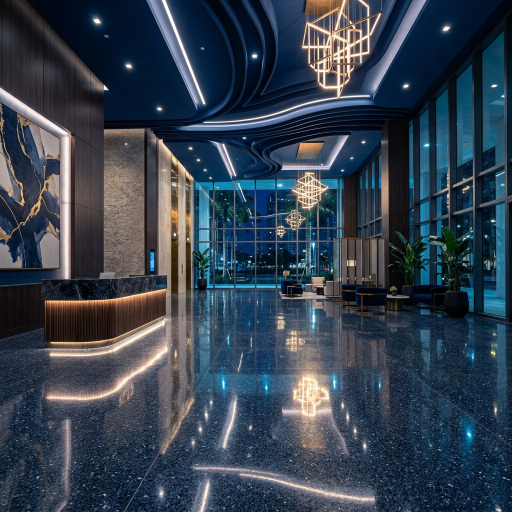

Marble
Often restored through progressive honing and polishing. Etching and wear are treated differently from structural slab movement.
Renovation Service · Miami
Service guide
Livane Renovation restores marble, terrazzo, natural stone and selected concrete floors across South Florida using a surface-specific process rather than one universal grinding method. Floor restoration is corrective work intended to improve a worn, etched, scratched, stained or unevenly finished surface when the underlying floor remains serviceable. The method depends on the material. Marble may be honed and polished, terrazzo may need repairs followed by progressive refinement, and concrete polishing uses its own grinding, densification and polishing sequence when appropriate.
Identify the floor material, finish history and visible failure patterns.
Test representative areas where the correct process or achievable finish is uncertain.
Define protection, access, dust or slurry control and occupied-space sequencing.
Complete material-specific repairs and removal work included in the scope.
Hone, refine or grind only with tooling appropriate to that surface and objective.
Polish or finish to the agreed appearance; concrete densification is used only where suitable.
Apply a compatible sealer or guard only when the material and use call for it.
Review uniformity, edges, transitions and ongoing maintenance.
Often restored through progressive honing and polishing. Etching and wear are treated differently from structural slab movement.
May combine patching, aggregate exposure management, honing and polishing; old repairs can remain visually distinct.
Polishing may involve grinding and, where appropriate, densification. Coating removal and slab defects materially change the scope.
Stone identification, mineral composition and finish goals guide the method; a marble process should not be assumed for every stone.
Polishing mainly refines gloss and clarity on a suitable surface. Restoration adds corrective steps for wear, etching, scratches, coatings or inconsistent finish.
Restoration is attractive when the floor is fundamentally serviceable and the desired result is achievable. Widespread instability, unsuitable assemblies or expectations beyond the material may favor replacement.
Sealing depends on material porosity, exposure and maintenance goals. It is not a substitute for repairing movement or correcting a failed surface.
Material, prior damage, repairs, aggregate or veining, edge access and the chosen refinement level all influence the outcome.
No responsible scope can be priced from the service name alone. The principal project variables are:
Yes. Many marble floors can be honed and polished when the stone assembly remains serviceable, although deep damage and prior repairs can limit uniformity.
Often yes, particularly when the matrix is stable. A test area helps show how repairs, aggregate and historic wear will respond.
Duration depends on material, area, damage, repairs, edge work, access and the selected finish. Testing is often needed before a reliable schedule is set.
No. Tooling and aggressiveness must match the surface. Marble, terrazzo, natural stone and concrete do not share one universal restoration process.
No. Some staining penetrates the material or reflects conditions beneath it. The likely improvement should be assessed before promising removal.
Send overall and close-up photos, approximate square footage, material if known, property location, finish goal and information about coatings or prior work.
Share clear photos, approximate square footage, the property location, current condition and desired result. That information helps separate a preliminary conversation from work that needs a site review.
Commercial floor restoration in Miami revitalizes heavily worn, damaged, or improperly maintained hard surfaces, systematically returning them to their original operational standard. In high-traffic active properties across South Florida, floors endure severe abuse over time, requiring specialized intervention to correct structural pitting, aggressive wear patterns, and severe surface dulling.

Our restoration process is not a superficial janitorial clean; it is a heavy mechanical remediation. We utilize industrial-grade equipment and diamond abrasive techniques to cut past the damaged top layer, exposing the fresh, sound material beneath. Whether addressing concrete, natural stone, or terrazzo, we permanently restore the structural integrity and aesthetic finish of the floor.
Executing a proper restoration dramatically extends the functional lifespan of the existing floor slab, preventing the need for costly and disruptive complete replacements. For property owners and managers dealing with distressed surfaces, professional restoration delivers a renewed, highly durable floor system that meets strict commercial performance and safety standards.
A restoration project may move into mechanical floor polishing, while operational areas may require commercial epoxy flooring. During larger interior upgrades, we can also coordinate adjacent carpet installation and finish scopes. By addressing the root cause of the damage—such as severe lippage or chemical etching—we ensure that the newly restored surface performs exceptionally well under ongoing commercial use.
We do not mask problems with heavy waxes or acrylic sealers. Our focus is on mechanical refinement. By grinding the floor flat and repairing structural deficits with color-matched resins, we provide a true restoration that reduces long-term maintenance burdens and elevates the property's value.
Deep mechanical grinding to remove surface damage, structural crack and spall patching, leveling of uneven joints (lippage removal), surface densification, and final mechanical polishing or application of industrial sealers.
Historic homes, businesses, and managed properties, heavily utilized hotel lobbies, aging industrial facilities, multi-tenant retail centers, institutional buildings, and commercial office towers.
The slab is aggressively ground with coarse metal-bonded diamonds to eliminate deep scratches, stains, and degraded material. Structural repairs are executed with industrial-grade epoxies or cementitious compounds. The surface is then progressively refined, chemically densified, and polished to restore its durability.
Neglected floors present severe trip hazards and negatively impact property perception. Restoration salvages the existing material, providing a highly cost-effective alternative to full tear-out while delivering a resilient, contractor-grade finish that resists future damage.
Every restoration project is unique. We conduct a detailed site assessment to diagnose the exact cause of the floor's failure. Our proposals are based strictly on the current condition of the slab, ensuring we specify the right mechanical repairs and tooling required to genuinely restore the surface.